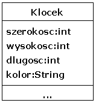

| kod programu |
System.out.println(WindyString.blow("Abrakadabra! The second chance to pass has already BEGUN! "));
|
| wynik dzia³ania programu |
e a e a a ea y
br k d br ! Th s c nd ch nc t p ss h s lr d B G N!
A a a a a e o o a E U
|
| kod programu | wynik dzia³ania programu |
Tree d1=new Tree("2345","725");
d1.setLeaves("$#$#");
System.out.println(d1);
Tree d2=new Tree("638");
Tree d3=new Tree("24156","023","@%@");
System.out.println(d2);
System.out.println(d3);
|
|
$$|$$$$$$$
###|##
$$$$|$$$$$
#####|
|
|
|
******|******
***|***
********|********
|
|
|
@@|
%%%%|%%
@|@@@
@@@@@|
@@@@@@|
|
|
|
| kod programu | wynik dzia³ania programu |
Sentence s1=new Sentence("tylko","KOT"),
s2=new Sentence("a","myszy", 2),
s3=new Sentence(s1,s2,"calkiem","same"),
s4=new Sentence(s3, "na", new Integer(32), "ulicy");
System.out.println(s1);
System.out.println(s2);
System.out.println(s3);
System.out.println(s4);
|
Tylko kot. A myszy 2. Tylko kot a myszy 2 calkiem same. Tylko kot a myszy 2 calkiem same na 32 ulicy. |
| kod programu | wynik dzia³ania programu |
int[][] data={{2,0,8,9},
{3,0,-1,20},
{13,12, 17, 18},
{1, 2, 3, 4},
{2, 0, 7, 9} };
Table t1=new Table(data);
Table t2=t1.getWithoutMin();
Table t3=t2.getWithoutMin();
System.out.println(t1);
System.out.println(t2);
System.out.println(t3);
|
2 0 8 9
3 0 -1 20
13 12 17 18
1 2 3 4
2 0 7 9
2 0 9
13 12 18
1 2 4
2 0 9
13 18
1 4
|

Szeroko¶æ klocka to najd³u¿szy z podanych boków, za¶ wysoko¶æ to najkrótszy.
kod testowy |
wynik dzia³ania |
Klocek k1=new Klocek("yellow",1,5,4);
Klocek k2=new Klocek("blue",2,2,6);
Klocek k3=new Klocek("green",3,4,2);
Klocek k4=new Klocek("yellow",1,5,4);
Wieza wieza=new Wieza();
wieza.add(k1,k2,k3);
System.out.println(wieza);
wieza.add(k2);
wieza.add(k4);
System.out.println(wieza);
wieza.delete(k1);
wieza.delete(k1);
System.out.println(wieza);
|
Wieza nie zawiera zadnych klockow ---------------------------------- INFO: dodalem 3 klocki klocek: green, podstawa: 4cm x 3cm, grubosc: 2 cm klocek: blue, podstawa: 6cm x 2cm, grubosc: 2 cm klocek: yellow, podstawa: 5cm x 4cm, grubosc: 1 cm -------------------------------------------------- ERR: ten klocek znajduje sie juz w wiezy INFO: dodalem 1 klocek klocek: yellow, podstawa: 5cm x 4cm, grubosc: 1 cm klocek: green, podstawa: 4cm x 3cm, grubosc: 2 cm klocek: blue, podstawa: 6cm x 2cm, grubosc: 2 cm klocek: yellow, podstawa: 5cm x 4cm, grubosc: 1 cm -------------------------------------------------- INFO: usunalem 1 klocek ERR: ten klocek nie znajduje sie w wiezy klocek: yellow, podstawa: 5cm x 4cm, grubosc: 1 cm klocek: green, podstawa: 4cm x 3cm, grubosc: 2 cm klocek: blue, podstawa: 6cm x 2cm, grubosc: 2 cm -------------------------------------------------- |